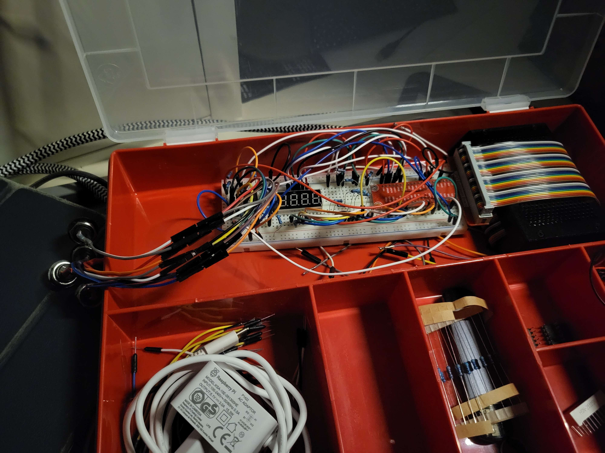

Ik ben deze week bezig geweest met het maken van mijn individuele website. Hierin was het nodig om wat te doen met Javascript. Om hier wat leuks mee te doen heb ik ervoor gekozen om een animatie van mijn character op te zoeken op internet en ervoor te zorgen dat je die over het scherm ziet lopen als je een geheime knop indrukt op de pagina. Hiermee heb ik wat geleerd van Javascript in combinatie met HTML en CSS. Ik vind het dan ook zeer leuk om directe resultaten te zien als het dan eenmaal werkt.Daarnaast heb ik ook met Javascript gewerkt om displays te maken die een ander stuk tekst weergeven als je over een specifieke knop heen hovert dan als je erop drukt. Deze code leren begrijpen was zeker ook intressant.
Ik heb mijn concept aangepast naar waar ik het vorige week over had. Mijn hardware is nu compleet werkend en mijn individuele websit eis bijna klaar. Ik ben bijna klaar met alle groepsonderdelen en kan nu bijna gaan werken aan extra onderdelen die ik als extra moeilijkheid voor mijzelf kan gaan doen. Hier zit ik bijvoorbeeld te denken aan het toecoegen van meerdere aninmaties op mijn webpagina (zoals de bewegende ruimte die zo iconish is voor Among us) of wat meer interresantje geheimen toevoegen aan mijn website.
Ik heb deze week een verhaal dat het tegenovergestelde is van vorige week. Deze week ben ik namelijk voor mijzelf aan het timen geweest hoe lang ik bezig ben als ik iets niet weet en de antwoorden daarvan op internet ga opzoeken. De conclusie daaruit is niet alleen dat ik nog geen kwartier bezig ben met het vinden van een juiste oplossing, maar ik ook nog eens leer hoe ik verschillende antwoorden van interenet kan intrepeteren en verwerken in mijn eigen code.
We zijn nu bijna aan het einde van eht project. De laatste loodjes zijn nu bekend en ik weet wat mij te doen staat en ik heb nog genoeg te doen. Er zijn nog een paar laatste stappen van het proces die ik moet doorlopen. Voor mijzelf zijn dit het afronden van een aantal onderdelen (bv mijn individuele website en de feedback op mijn HTML en CSS code) en het nalopen van alle gemaakte onderdelen van mij en de groep. Daarnaast komen ook nog de afrondende momenten zoals de Assassment op maandag, de praktijkpresentatie van woensdag en de eindpresentatie op vrijdag er ook nog bij. Het proces goed volgen om ook deze laatste momenten goed door te komen is dan ook van groot belang.
Voor mij zijn er niet echt veranderingen geweest in gemaakte keuzes. Ik heb alleen zelf bepaald hoe ik mijn webpagina op wil zetten, maar dat valt samen te vatten in 1 zin. Het them is Among Us. Alles op mijn pagina heeft daarmee te maken. Van de kleur op de achtergrond, totaan de verstopte annimatie op mijn pagina.
Ik ga de term realisatie wat anders verwoorden dit keer. Normaal zou ik zeggen dat we een product moeten realiseren. Dit keer zeg ik dat ik mijzelf heb gerealiseerd dat ik nog veel te doen heb in deze laatste dagen. Ik ben daarom ook zeer blij dat ik het voor elkaar heb gekregen om het idee van de houten behuizing voor onze puzzels te realiseren. Hierdoor zijn onze puzzels zometeen veilig en hygienisch opgeborgen voordat er zodat er goed mee gespeeld kan worden,
Ik heb met mijn groep deze zondag bijna de hele dag aan 1 tafel gezeten om met zijn allen aan project te werken. Aangezien ik het verste was van de groep met het maken van mijn opdrachten besloot ik dan ook de rest te helpen met het maken van hun onderdelen. Dat hield vooral in dat ik mee hielp met het werkend krijgen van hardware, wat helaas niet gelukt is omdat ik denk dat 2 van mijn groepsgenoten hoogstwaarschijnlijk een kapot breadboard hebben (1 is denk ik stroomtoevoer beschadigd en die ander doet onvoorspelbare dingen als er ene set lampjes moeten gaan branden). Ik probeer iedereen te helpen waar ik kan, maar probeer er wel op te letten dat ik niet in de problemen kom kwa tijd met mijne eigen planning. Al met al gaat mijn eigen werk uiteindelijk voor op het werk van een groepslid (klinkt egoistisch maar ik heb er meer baat bij als ik het haal dan een ander)
